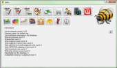

Minden számla a rendszerben egyedi kategóriákba sorolható, szeparálható saját szempontok szerint (Például különböző munkák bevételeinek és kiadásainak elkülönítése céljából). A Selfin képes ÁFA, és költség -számolásokat végezni akár a számlabesorolások alapján is. Az adatok a bejövő, kimenő számlákból automatikusan frissülnek.
Kitűnő eszköz a cég pénzügyi helyzetének nyomonkövetésére. (De nem könyvelőprogram)
A program a magyar adótörvényeknek megfelelő számla előállítására alkalmas. Egyszerűen használható, az alapadatok beállítása után gyakorlatilag azonnal üzembe helyezhető. A számlák előállítása nem igényel semmilyen előképzettséget, vagy komolyabb tanulást. A SelfIn használatával minimalizálhatod a rontott, hibásan kitöltött számlák számát. (A számlatömbös kézi számlázással szemben)
Az adatokat egy sqlite adatbázisban tárolja, tehát a programot bárhol használhatod, nem szükséges szerver elérés vagy internet kapcsolat, akár egy pen-drive on is hordozható. A program Win32 vagy Linux környezet alatt futtatható.
SelfIn |

|

|
SelfIn, Self invoicer azaz Saját számlázóprogram
A selfin egy komplex kisvállalati számlázó és nyilvántartó program. Habár az esődleges funkciója kimenő számlák készítése (stornó számlákat is beleértve), lehetetőség van a bejövő számlák nyilvántartására illetve karbantartására, fizetési információk rögzítésére és végsősoron céges/vállakozói bankszámla követésére az előbbi adatokból. Később lehetőség van a számlák közti kutakodásra partner/dátum/besorolás szerint, illetve excel táblázatok generálhatóak a későbbi feldolgozás elősegítése érdekében.Minden számla a rendszerben egyedi kategóriákba sorolható, szeparálható saját szempontok szerint (Például különböző munkák bevételeinek és kiadásainak elkülönítése céljából). A Selfin képes ÁFA, és költség -számolásokat végezni akár a számlabesorolások alapján is. Az adatok a bejövő, kimenő számlákból automatikusan frissülnek.
Kitűnő eszköz a cég pénzügyi helyzetének nyomonkövetésére. (De nem könyvelőprogram)
A program a magyar adótörvényeknek megfelelő számla előállítására alkalmas. Egyszerűen használható, az alapadatok beállítása után gyakorlatilag azonnal üzembe helyezhető. A számlák előállítása nem igényel semmilyen előképzettséget, vagy komolyabb tanulást. A SelfIn használatával minimalizálhatod a rontott, hibásan kitöltött számlák számát. (A számlatömbös kézi számlázással szemben)
Az adatokat egy sqlite adatbázisban tárolja, tehát a programot bárhol használhatod, nem szükséges szerver elérés vagy internet kapcsolat, akár egy pen-drive on is hordozható. A program Win32 vagy Linux környezet alatt futtatható.

{kind=link}
{kind=link}
{kind=link}
| Szerző: | Deák Péter |
| Kapcsolat Email: |  at gmail.com at gmail.com |